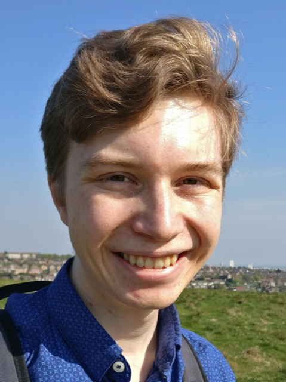

Hi there!
I'm James, and I'm a PhD student in the Department of Applied Mathematics and Theoretical Physics (DAMTP) at the University of Cambridge. I am a member of the Physics Beyond the Standard Proton (PSBP) research group, headed by Maria Ubiali, and I study the interplay between parton distribution functions and possible beyond the Standard Model physics.
To find out more about my work, check out the Research page. If you are one of my students looking for resources for the Cambridge Mathematical Tripos, take a look at the Notes page.
The best way to contact me is via email, at james.moore@damtp.cam.ac.uk. Alternatively, most of the time you can find me at the Centre for Mathematical Sciences, in office B1.15.